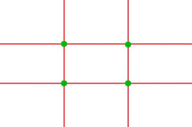
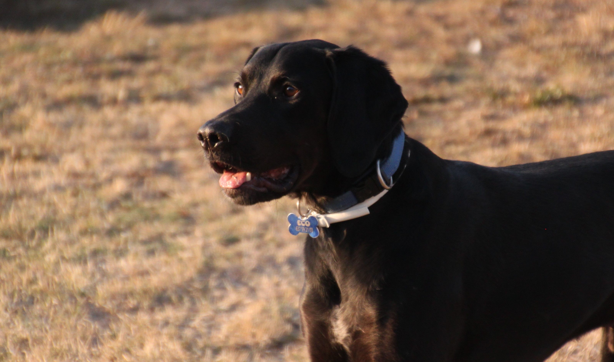
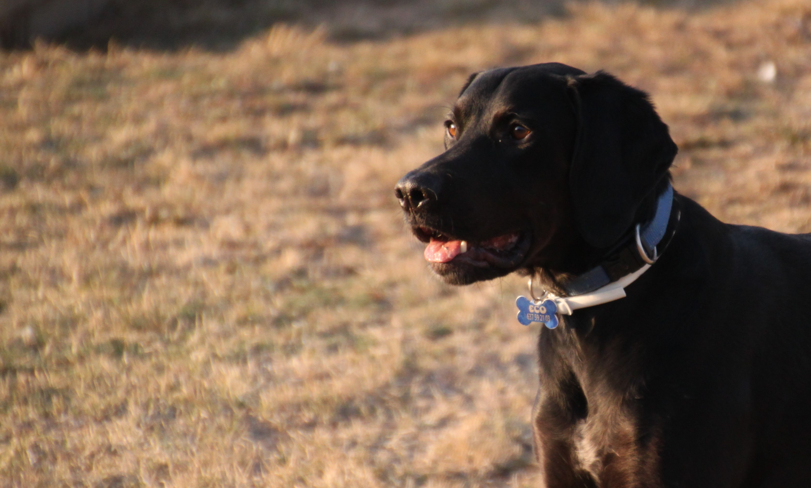
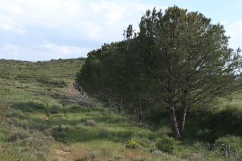
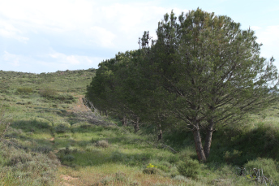
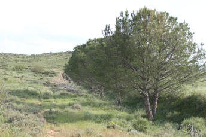
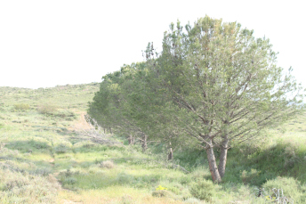

La gente suele pensar que hacer una fotografía es muy fácil, que solo es enfocar y se hace solo; pero hay bastante más trabajo detrás de una buena fotografía. Aquí explicaré los aspectos a tener en cuenta más fáciles para hacer una buena fotografía.
Los cuatro aspectos que voy a comentar van a ser el enfoque, la duración de la foto, la herramienta ISO y el balance de blancos. Habrá que ir jugando con estas herramientas para conseguir una buena foto.
ENFOQUE
Es muy importante el enfoque que se le da a una fotografía. Está comprobado que es mucho más atractivo para la vista no tener el objeto principal en el centro de la fotografía, a no ser que sea un grupo de cosas. Para esto se utiliza la sucesión de Fibonacci:

Si aplicamos esta sucesión desde las cuatro vistas posibles nos damos cuenta que crea la cuadrícula que aparece en la cámara de fotos. Esta cuadrícula es entonces para enfocar más o menos en esos puntos el objeto principal.
Este efecto es llamado la regla de los tercios. Los puntos verdes es el “final” de la sucesión de Fibonacci, es decir, la zona a encuadrar el objeto.
No obstante, la fotografía puede perfectamente enfocar al centro y quedar bien igualmente.
|  |
 |
| Imagen centrada |
Imagen ladeada |
DURACIÓN DE LA FOTOGRAFÍA
Una fotografía puede durar desde una milésima de segundo a horas. Si hacemos las fotos sin trípode y durante mas de 1/15 segundos es muy probable que la fotografía salga con mucha luz y borrosa por el movimiento.
Cuanto más rato estés haciendo la foto, más luz va a recibir; por el contrario, si estamos muy poco tiempo no recibirá suficiente luz y saldrá muy oscura. El tiempo de la foto depende de la luz que haya y de la cantidad de luz que desees en esta.
El tiempo que la cámara está haciendo la foto se suele cambiar de las ruletas que estas llevan. Aquí dejo unos ejemplos de hacer la fotografía con unos tiempos u otros:
|  |
 |
| Fotografía a 1/400 segundos |
Fotografía a 1/320 segundos |
|  |
 |
| Fotografía a 1/200 segundos |
Fotografía a 1/100 segundos |